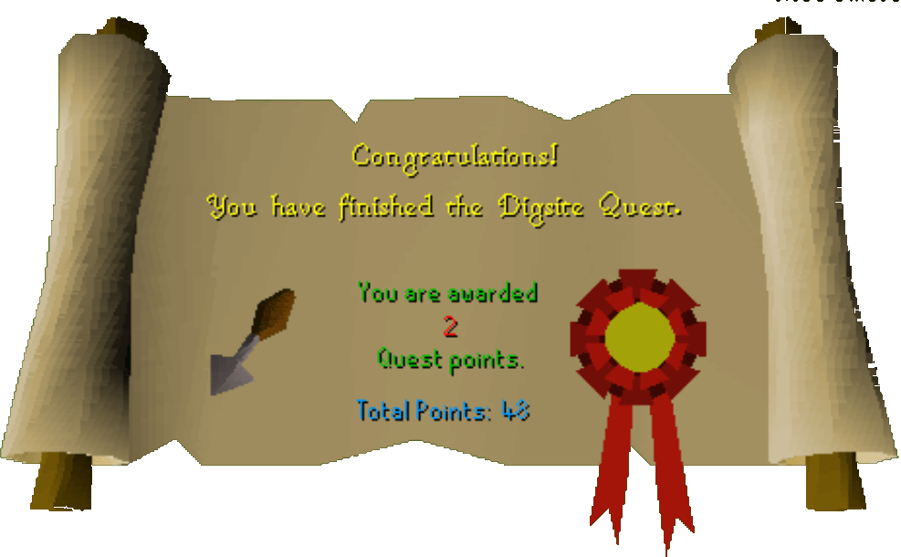

Digsite Quest
Description: Feeling uneducated? Desperate for buried treasure? ..."There's gold in them there hills" (well stream actually) as well as many other items that can be found at the digsite. Join the students in their attempt to be a qualified archaeologist, and become experienced in making the earth move! Have you got what it takes to unearth the hidden altar to one of Runescape's lesser-known Gods...?Difficulty: Novice
Length: Long
Items & Skills Needed:
- 25 Thieving
- 10 Agility
- 10 Herblore
Recommended:
- The ability to run pass level 22 skeletons
Reward: 2 Quest points, 15,300 Mining XP, 2,000 Herblore XP, 2 Gold Bars, the ability to pan and dig at the Dig Site
Extra: Show the Curator all Digging Certificates and you can choose between a free Snack (Chocolate Cake) or a Drink (Fruit Blast Cocktail)
Instructions:
Talk to the Archeological expert. He tells you to bring anything you find to him. Inquire about exams to Examiner. She gives you an unstamped certificate of recommendation.
Go to the Varrock Museum. Use the unstamped certificate of recommendation on the Curator. He will stamp the certificate so you can begin the certification exams.
If you don't already have a cup of tea, on your way out of Varrock, steal a cup of tea from the tea stall.
Go back to the Digsite, give the Examiner the stamped certificate of recommendation, and take her exam. No matter what you answer on the test, you will get all three questions wrong.
The First Exam
Follow the main road north until you come to two wooden walkways. Take the northeast one to the top of the hill. Next to the large urn are two bushes. Search the one to the east for a rock sample.
Continue following the walkway to the bottom of the hill. Take the panning tray from inside the large tent.
Go southeast from the tent to the stream and use the panning tray on the panning points. A guide will ask you what you are doing and then tell you that you cannot pan the stream unless you're invited. Ask him how to get invited, he tells you if you do him a favor and get him some tea he will look the other way.
Talk to the guide with a cup of tea; he'll take it and give you permission to pan. Once you pan the stream you must search the panning tray to see what you found. Pan for a muddy rock sample and, if needed, an uncut opal. Cut the opal; if it shatters, pan for another until you succeed.
Go Northwest of the panning points to the dig area and pickpocket the workman until you get a rock sample, a specimen brush, and 2 ropes (unless you brought the ropes with you already).
Talk to a student in a green shirt, just north of the workman...he will take rock sample 1 and give you the following exam answer: the study of earth sciences is the study of the earth, its contents and history.
A bit north, talk to a male student in an orange shirt. He will take rock sample 2 and give this answer: the eligible people to use the digsite are all that have passed the appropriate earth sciences exam.
Just a bit north of here, talk to a female student in a purple shirt. She will take rock sample 3 and give this answer: the proper health and safety points are gloves and boots to be worn at all times, proper tools must be used.
Go back to the Examiner and take the exam. She will give you a level one certificate and a trowel for completing the first of 3 exams.
Do not lose the trowel, because at this time, once you complete all 3 exams, you cannot get another one from her, you can however pickpocket a workman for one. You can take the certificate to the Curator at the museum for safekeeping or you can hold onto it until you get all three and then take them to him.
The Second Exam
Go speak to the students again to get the answers to the second exam.
The green shirt student tells you correct rockpick usage: always handle with care, strike the rock cleanly on its cleaving point.
The orange shirt student tells of correct sample transportation: samples taken in rough form, kept only in sealed containers.
The purple shirt student explains finds handling: finds must be carefully handled, and gloves worn...
Go back to the Examiner and take the second exam. You will get a certificate for completing the 2nd exam.
The Third Exam
Go speak to the students again to get the answers to the third exam.
The female student will ask for an opal in exchange for her help.
Specimen brush use: brush carefully and slowly using short strokes.
Proper technique for handling bones: handle bones carefully, and keep away from other samples.
Sample preparation: samples cleaned and carried only in specimen jars.
Take her answer and the guy's answers and go to the Examiner and take the third exam. You will get a certificate for completing the 3rd exam.
You now have graduated and can dig anywhere in the dig site. Take your certificate(s) to the curator in the Varrock museum and you either get a Chocolate Cake or Fruit Blast as a reward for graduating.
The Stone Tablet
Go back to the Dig site go to the northeast corner of the dig site (past a winch that you will use later) to the level 3 area with the buried skeleton. Search the sacks Southwest of it and find the specimen jar.
Go to the northeast corner to the level 3 area with the buried skeleton and use the trowel on the soil until you find a Zaros Talisman.
Next use the Talisman on the Archeological expert (by the Examiner); he will reward you for your keen eye with a scroll saying you can use his personal mine shaft (which is the winch next to the area you got the Talisman from).
Return to the digsite and use the letter with a workman. He will allow you to enter the shafts.
Go to the northeast corner, then go south one dig plot (sign reads level 2 digs only) to the site with the winch. Operate the winch and you'll be told you need something to help the bucket reach the bottom. Use the rope with the winch and operate it to lower yourself to the bottom. Take an Arcenia root.
Talk to the Workmen and say the following things: I have been invited to research here, then, do you know where I can find a chest key then from then on use the first option in every sentence to beg yourself a new key.
Go back to the tents. Search the specimen tray outside of the tent where you found the panning tray until you find charcoal. Use pestle and mortar on the charcoal to get ground charcoal.
To the West of the tents; you will find 3 barrels. Use the trowel on them until one of them is opened. Use the vial on the open barrel to get an orange unidentified liquid. Do not, I repeat, do not drop the vial! You will take from 20 to 36 damage!
Go to the tent where you got the panning tray. Use the key on chest and you'll receive an unidentified white chemical powder.
Take the unidentified powder and orange vial of unidentified liquid to the Archeological expert (by the Examiner) to get them identified as Ammonium Nitrate and Nitroglycerin respectively.
(Optional): Search the bookshelves in the Examiner's room and find the Book of Experimental Chemistry. Read this book. It has the ingredients to make a bomb you will need later on.
Go back to the dig site and go back down the north west winch.
Prepare yourself a chemical compound:
Use the ammonium nitrate on nitroglycerin
Use ground charcoal on the mixture
Finally use the Arcenia root on the mixture
You now have a chemical compound.
Go to the south fork and use the chemical compound on the bricks blocking the way. Then light the brick with your tinderbox. Once the path has been cleared, go straight ahead and get the stone tablet in the middle of the room.
Take the stone tablet back to the Archeological expert to complete the quest and get your reward.
Congratulations, Quest Complete!

This quest guide was written by Elyria1. Thanks to FunkyMetal, stormer, kevin rigby, ya sissy jrr for corrections.
This quest guide was entered into the database on Wed, Jun 09, 2004, at 12:23:34 PM by Pirate Bob49 and was last updated on Mon, Jul 05, 2004, at 10:48:51 PM.